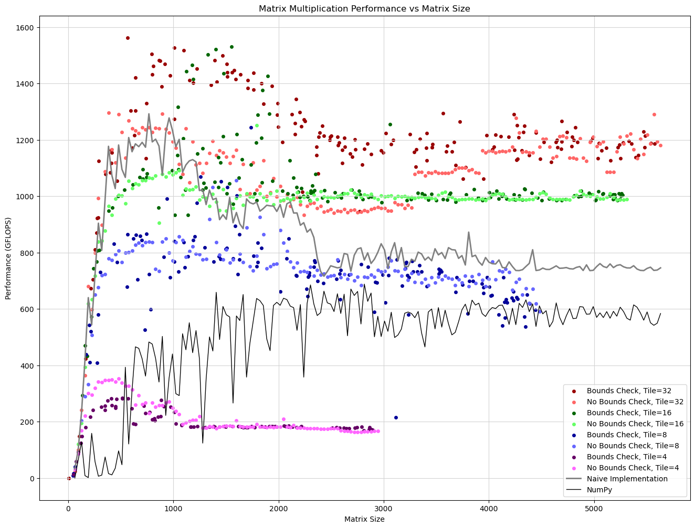

import numpy as np
from PIL import Image
from pathlib import PathDay 7 - Tiled matmul experiments
- Benchmark it against Numpy and naive matmul
- Benchmark the impact of boundary checks on performance.
import pycuda.driver as cuda
from pycuda.compiler import SourceModule
cuda.init()
device = cuda.Device(0)
print(f"Cuda version: {".".join([str(i) for i in cuda.get_version()])}")
print(f"Device:\t{device.name()}")Cuda version: 12.8.0
Device: NVIDIA GeForce RTX 3080 Laptop GPUday_07_matmul-tiled-experiments.cu
#include <stdint.h>
#include <stdio.h>
#ifndef TILE_WIDTH
#define TILE_WIDTH 16
#endif
__global__ void matmul_fp32_tiled_bc(float* m1, float* m2, float* res,
uint32_t out_shape_0,
uint32_t out_shape_1,
uint32_t inner_dim,
uint32_t) {
int x = blockIdx.x * blockDim.x + threadIdx.x;
int y = blockIdx.y * blockDim.y + threadIdx.y;
__shared__ float m1_tile[TILE_WIDTH][TILE_WIDTH];
__shared__ float m2_tile[TILE_WIDTH][TILE_WIDTH];
int m1_x = inner_dim;
int m2_x = out_shape_1;
if (x < out_shape_1 && y < out_shape_0) {
float R = 0;
for (int tile = 0; tile < inner_dim / TILE_WIDTH; tile++) {
m1_tile[threadIdx.y][threadIdx.x] = m1[y * m1_x + tile * TILE_WIDTH + threadIdx.x];
m2_tile[threadIdx.y][threadIdx.x] = m2[(tile * TILE_WIDTH + threadIdx.y) * m2_x + x];
__syncthreads();
for (int i = 0; i < TILE_WIDTH; i++) {
R += m1_tile[threadIdx.y][i] * m2_tile[i][threadIdx.x];
}
__syncthreads();
}
res[y * out_shape_1 + x] = R;
}
}
__global__ void matmul_fp32_tiled(float* m1, float* m2, float* res,
uint32_t out_shape_0,
uint32_t out_shape_1,
uint32_t inner_dim,
uint32_t) {
int x = blockIdx.x * blockDim.x + threadIdx.x;
int y = blockIdx.y * blockDim.y + threadIdx.y;
__shared__ float m1_tile[TILE_WIDTH][TILE_WIDTH];
__shared__ float m2_tile[TILE_WIDTH][TILE_WIDTH];
int m1_x = inner_dim;
int m2_x = out_shape_1;
float R = 0;
for (int tile = 0; tile < inner_dim / TILE_WIDTH; tile++) {
m1_tile[threadIdx.y][threadIdx.x] = m1[y * m1_x + tile * TILE_WIDTH + threadIdx.x];
m2_tile[threadIdx.y][threadIdx.x] = m2[(tile * TILE_WIDTH + threadIdx.y) * m2_x + x];
__syncthreads();
for (int i = 0; i < TILE_WIDTH; i++) {
R += m1_tile[threadIdx.y][i] * m2_tile[i][threadIdx.x];
}
__syncthreads();
}
res[y * out_shape_1 + x] = R;
}
// Non-tiled version
__global__ void matmul_fp32(float* m1, float* m2, float* res,
uint32_t out_shape_0,
uint32_t out_shape_1,
uint32_t inner_dim,
uint32_t) {
int x = blockIdx.x * blockDim.x + threadIdx.x;
int y = blockIdx.y * blockDim.y + threadIdx.y;
int m1_width = inner_dim;
int m2_width = out_shape_1;
float out;
if (x < out_shape_1 && y < out_shape_0) {
out = 0;
for (int i = 0; i < inner_dim; i++) {
out += m1[y * m1_width + i] * m2[i * m2_width + x];
}
res[y * out_shape_1 + x] = out;
}
}
from lovely_numpy import Lom1 = np.random.randn(513, 1024).astype(np.float32)
m2 = np.random.randn(1024, 8000).astype(np.float32)
np_res = np.matmul(m1, m2)
Lo(np_res)array[513, 8000] f32 n=4104000 (16Mb) x∈[-171.804, 161.225] μ=0.015 σ=32.003## Compiler options for more compile-time warnings.
warn_options=[
'-Xcompiler', '-Wall',
'-Xcompiler', '-Wextra',
'-Xcompiler', '-Wsign-conversion',
'-Xcompiler', '-Wcast-qual',
'-Xcompiler', '-Wunused-parameter',
'-Xcompiler', '-Wdouble-promotion',
'-Xcompiler', '-Wformat=2',
'-Xcompiler', '-Wfloat-equal',
'-Xcompiler', '-Wshadow'
]def benchmark_matmul(file, kernel_name, m1, m2, tile_width=16, repeat=100):
assert len(m1.shape) == 2
assert len(m2.shape) == 2
assert m1.shape[1] == m2.shape[0]
out_shape = (m1.shape[0], m2.shape[1])
try:
ctx = device.make_context()
mod = SourceModule(
Path(file).read_text(),
options=warn_options + [
f"-D TILE_WIDTH={tile_width}",
])
kernel = mod.get_function(kernel_name)
gpu_m1 = cuda.mem_alloc_like(m1)
gpu_m2 = cuda.mem_alloc_like(m2)
res = np.empty(out_shape, dtype=np.float32)
cuda.memcpy_htod(gpu_m1, m1)
cuda.memcpy_htod(gpu_m2, m2)
block_size = (tile_width, tile_width, 1)
grid_size = (
((out_shape[1] + tile_width - 1) // tile_width),
((out_shape[0] + tile_width - 1) // tile_width),
1
)
print(f"Matrix 1 shape: {m1.shape}")
print(f"Matrix 2 shape: {m2.shape}")
print(f"Result shape: {out_shape}")
print(f"Grid size: {grid_size}")
print(f"Block size: {block_size}")
print(f"Total threads: {grid_size[0] * grid_size[1] * block_size[0] * block_size[1]}")
ctx.synchronize()
timing=0
for _ in range(repeat):
start = cuda.Event()
end = cuda.Event()
gpu_res = cuda.mem_alloc_like(res)
kernel(gpu_m1, gpu_m2, gpu_res, np.uint32(out_shape[0]), np.uint32(out_shape[1]), np.uint32(m1.shape[1]), grid=grid_size, block=block_size)
start.record()
kernel(gpu_m1, gpu_m2, gpu_res, np.uint32(out_shape[0]), np.uint32(out_shape[1]), np.uint32(m1.shape[1]), grid=grid_size, block=block_size)
end.record()
cuda.memcpy_dtoh(res, gpu_res)
timing += end.time_since(start)
timing /= repeat
finally:
ctx.pop()
ctx.detach()
return res, timing;
res, timing = benchmark_matmul("day_07_matmul-tiled-experiments.cu", "matmul_fp32_tiled_bc", m1, m2, 16, repeat=10)
print(Lo(res))
print(f"Took {timing:.3f}ms")Matrix 1 shape: (513, 1024)
Matrix 2 shape: (1024, 8000)
Result shape: (513, 8000)
Grid size: (500, 33, 1)
Block size: (16, 16, 1)
Total threads: 4224000
array[513, 8000] f32 n=4104000 (16Mb) x∈[-171.804, 161.226] μ=0.010 σ=32.011
Took 6.350msnp.isclose(res, np_res).mean()np.float64(0.9773111598440546)This works. Let’s run the experiments.
import pandas as pd
from tqdm.auto import tqdmimport random# data = pd.DataFrame(columns=["matrix_size", "tile", "timing_bc", "timing_nc"])
data = []
repeat = 3
def time_kernel(ctx, kernel, tile_size, matrix_size, repeat=5):
out_shape = (matrix_size, matrix_size)
m1 = np.random.randn(matrix_size, matrix_size).astype(np.float32)
m2 = np.random.randn(matrix_size, matrix_size).astype(np.float32)
res = np.empty_like(m1)
gpu_m1 = cuda.mem_alloc_like(m1)
gpu_m2 = cuda.mem_alloc_like(m2)
gpu_res = cuda.mem_alloc_like(res)
block_size = (tile_size, tile_size, 1)
grid_size = (
((out_shape[1] + tile_size - 1) // tile_size),
((out_shape[0] + tile_size - 1) // tile_size),
1
)
# warmup run, just in case
kernel(gpu_m1, gpu_m2, gpu_res, np.uint32(out_shape[0]), np.uint32(out_shape[1]), np.uint32(m1.shape[1]), grid=grid_size, block=block_size)
timing = 0
for _ in range(repeat):
start = cuda.Event()
end = cuda.Event()
start.record()
kernel(gpu_m1, gpu_m2, gpu_res, np.uint32(out_shape[0]), np.uint32(out_shape[1]), np.uint32(m1.shape[1]), grid=grid_size, block=block_size)
end.record()
end.synchronize()
timing += end.time_since(start)
timing /= repeat
return timing
# for tile_size in tqdm([32, 24, 16, 12, 8, 4]):
for tile_size in tqdm([4, 8, 16, 32]):
ctx = device.make_context()
mod = SourceModule(
Path("day_07_matmul-tiled-experiments.cu").read_text(),
options=warn_options + [
f"-D TILE_WIDTH={tile_size}"
])
kernel_bc = mod.get_function("matmul_fp32_tiled_bc")
kernel_nc = mod.get_function("matmul_fp32_tiled")
n = 0
for matrix_size in tqdm(range(64,8192, 32)):
timing = time_kernel(ctx, kernel_nc, tile_size, matrix_size, repeat)
data.append({
"matrix_size": matrix_size,
"tile_size": tile_size,
"timing_nc": timing
})
n += 1
if timing > 300: break # We increase the size of the matrix until it gets too slow
# Sample a few matrix sizes that are not multiple of tile size
for _ in tqdm(range(n)):
# Generate a random matrix size that is not multiple of tile size
matrix_size = 32
while not matrix_size % tile_size:
matrix_size = random.randint(1, n*32)
timing = time_kernel(ctx, kernel_bc, tile_size, matrix_size, repeat)
data.append({
"matrix_size": matrix_size,
"tile_size": tile_size,
"timing_bc": timing
})Let’s also time the naive matmul implementation
def time_naive_matmul(ctx, kernel, size, repeat=5):
BLOCK_SIZE=32
out_shape = (size, size)
m1 = np.random.randn(matrix_size, matrix_size).astype(np.float32)
m2 = np.random.randn(matrix_size, matrix_size).astype(np.float32)
gpu_m1 = cuda.mem_alloc_like(m1)
gpu_m2 = cuda.mem_alloc_like(m2)
res = np.empty(out_shape, dtype=np.float32)
gpu_res = cuda.mem_alloc_like(res)
cuda.memcpy_htod(gpu_m1, m1)
cuda.memcpy_htod(gpu_m2, m2)
block_size = (BLOCK_SIZE, BLOCK_SIZE, 1)
grid_size = (
((out_shape[1] + BLOCK_SIZE - 1) // BLOCK_SIZE),
((out_shape[0] + BLOCK_SIZE - 1) // BLOCK_SIZE),
1
)
# warmup run, just in case
kernel(gpu_m1, gpu_m2, gpu_res, np.uint32(out_shape[0]), np.uint32(out_shape[1]), np.uint32(m1.shape[1]), grid=grid_size, block=block_size)
timing = 0
for _ in range(repeat):
start = cuda.Event()
end = cuda.Event()
start.record()
kernel(gpu_m1, gpu_m2, gpu_res, np.uint32(out_shape[0]), np.uint32(out_shape[1]), np.uint32(m1.shape[1]), grid=grid_size, block=block_size)
end.record()
end.synchronize()
timing += end.time_since(start)
timing /= repeat
return timingnaive_d = []
try:
ctx = device.make_context()
mod = SourceModule(
Path("day_07_matmul-tiled-experiments.cu").read_text(),
options=warn_options)
kernel = mod.get_function("matmul_fp32")
for matrix_size in tqdm(range(64, 8192, 32)):
timing = time_naive_matmul(ctx, kernel, matrix_size)
naive_d.append({
"matrix_size": matrix_size,
"timing_nc": timing
})
finally:
ctx.pop()
ctx.detach()import time
# Benchmark against numpy
numpy_data = []
for matrix_size in tqdm(range(64, 8192, 32)):
# Create random matrices
m1 = np.random.randn(matrix_size, matrix_size).astype(np.float32)
m2 = np.random.randn(matrix_size, matrix_size).astype(np.float32)
# Time numpy matmul
timing = 0
repeat = 3
for _ in range(repeat):
start_time = time.perf_counter()
np.matmul(m1, m2)
end_time = time.perf_counter()
timing += (end_time - start_time) * 1000 # Convert to ms
timing /= repeat
numpy_data.append({
"matrix_size": matrix_size,
"timing_numpy": timing
})data = [d for d in data if "tile_size" in d]naive_d = [{
"matrix_size": matrix_size,
"timing_nc": timing
} for matrix_size, timing in naive_d.items()]# Create empty dataframe with matrix size as index
df = pd.DataFrame(index=sorted(list(set(d['matrix_size'] for d in data))))
# Add columns for each tile size and version
for tile_size in [4, 8, 16, 32]:
# Get data for this tile size
tile_data = [d for d in data if d['tile_size'] == tile_size]
# Add bounds check timings
bc_data = {d['matrix_size']: d['timing_bc'] for d in tile_data if 'timing_bc' in d}
df[f'tile_{tile_size}_bc'] = pd.Series(bc_data)
# Add no bounds check timings
nc_data = {d['matrix_size']: d['timing_nc'] for d in tile_data if 'timing_nc' in d}
df[f'tile_{tile_size}_nc'] = pd.Series(nc_data)
# Add naive matmul timings
naive_timing_data = {d['matrix_size']: d['timing_nc'] for d in naive_d}
df['naive'] = pd.Series(naive_timing_data)
# Add numpy timings
numpy_timing_data = {d['matrix_size']: d['timing_numpy'] for d in numpy_data}
df['numpy'] = pd.Series(numpy_timing_data)df| tile_4_bc | tile_4_nc | tile_8_bc | tile_8_nc | tile_16_bc | tile_16_nc | tile_32_bc | tile_32_nc | naive | numpy | |
|---|---|---|---|---|---|---|---|---|---|---|
| 7 | NaN | NaN | NaN | NaN | NaN | NaN | 0.016043 | NaN | NaN | NaN |
| 46 | NaN | NaN | 0.020480 | NaN | NaN | NaN | NaN | NaN | NaN | NaN |
| 49 | 0.019115 | NaN | 0.014677 | NaN | NaN | NaN | NaN | NaN | NaN | NaN |
| 64 | NaN | 0.016384 | NaN | 0.016725 | NaN | 0.013995 | NaN | 0.022187 | 0.016186 | 2.617160 |
| 65 | NaN | NaN | 0.013312 | NaN | NaN | NaN | NaN | NaN | NaN | NaN |
| ... | ... | ... | ... | ... | ... | ... | ... | ... | ... | ... |
| 5539 | NaN | NaN | NaN | NaN | NaN | NaN | 286.144826 | NaN | NaN | NaN |
| 5568 | NaN | NaN | NaN | NaN | NaN | NaN | NaN | 267.395081 | 468.687262 | 637.096948 |
| 5576 | NaN | NaN | NaN | NaN | NaN | NaN | 292.212056 | NaN | NaN | NaN |
| 5600 | NaN | NaN | NaN | NaN | NaN | NaN | NaN | 294.163523 | 476.006195 | 639.416769 |
| 5632 | NaN | NaN | NaN | NaN | NaN | NaN | NaN | 302.702952 | 479.155829 | 612.006322 |
712 rows × 10 columns
import matplotlib.pyplot as plt
# Create figure
plt.figure(figsize=(16, 12))
# Define colors for each tile size - darker shade for bc, lighter for nc
colors = {
32: ['#990000', '#ff6666'], # Dark/light red
16: ['#006600', '#66ff66'], # Dark/light green
8: ['#000099', '#6666ff'], # Dark/light blue
4: ['#660066', '#ff66ff'] # Dark/light purple
}
# Plot for each tile size in reverse order so larger tiles appear first in legend
for tile_size in [32, 16, 8, 4]:
# Get data for this tile size from dataframe
bc_col = f'tile_{tile_size}_bc'
nc_col = f'tile_{tile_size}_nc'
# Get matrix sizes and timings, dropping NaN values
bc_data = df[bc_col].dropna()
nc_data = df[nc_col].dropna()
bc_matrix_sizes = bc_data.index
nc_matrix_sizes = nc_data.index
# Calculate GFLOPS
bc_gflops = (2 * bc_matrix_sizes**3 * 1000) / (bc_data * 1_000_000_000)
nc_gflops = (2 * nc_matrix_sizes**3 * 1000) / (nc_data * 1_000_000_000)
# Plot bounds check data
plt.scatter(bc_matrix_sizes, bc_gflops,
label=f'Bounds Check, Tile={tile_size}',
color=colors[tile_size][0],
s=16)
# Plot no bounds check data
plt.scatter(nc_matrix_sizes, nc_gflops,
label=f'No Bounds Check, Tile={tile_size}',
color=colors[tile_size][1],
s=16)
# Get naive data and calculate GFLOPS
naive_d = df['naive'].dropna()
naive_matrix_sizes = naive_d.index
naive_gflops = (2 * naive_matrix_sizes**3 * 1000) / (naive_d * 1_000_000_000)
# Plot naive data as a line
plt.plot(naive_matrix_sizes, naive_gflops,
label='Naive Implementation',
color='gray',
linewidth=2)
# Get numpy data and calculate GFLOPS
numpy_d = df['numpy'].dropna()
numpy_matrix_sizes = numpy_d.index
numpy_gflops = (2 * numpy_matrix_sizes**3 * 1000) / (numpy_d * 1_000_000_000)
# Plot numpy data as a line
plt.plot(numpy_matrix_sizes, numpy_gflops,
label='NumPy',
color='black',
linewidth=1)
plt.title('Matrix Multiplication Performance vs Matrix Size')
plt.xlabel('Matrix Size')
plt.ylabel('Performance (GFLOPS)')
plt.grid(True, color='lightgrey')
plt.legend();
m1 = np.random.randn(8192,8192).astype(np.float32)
m2 = np.random.randn(8192,8192).astype(np.float32)
start_time = time.perf_counter()
np.matmul(m1, m2)
end_time = time.perf_counter()
timing = (end_time - start_time) * 1000 # Convert to ms
print(f"Time: {timing:.3f} ms")
print(f"Performance: {(2 * (8192**3)* 1000) / (timing * 1_000_000_000):.2f} GFLOPS")Time: 1947.409 ms
Performance: 564.60 GFLOPS(2*8192**3) / (2 * 1_000_000)549755.813888